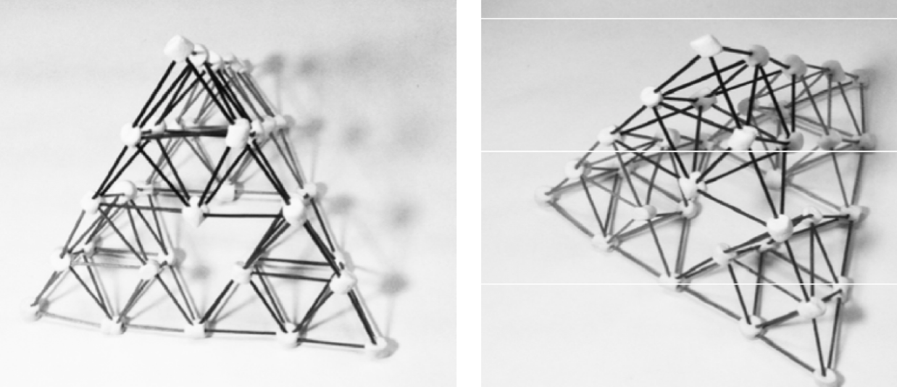

Rekursion og fraktaler
Indhold
Sierpinskis tetrahedron
Som en lille "smagsprøve" ud i rekursion og fraktaler skal I bygge Sierpinskis tetrahedron vha spaghetti og skumfiduser i stedet for i karton.
Fremgangsmåde for enkeltpersoner
- Hver person skal i første omgang bruge mindst 12 spaghettier og mindst 10 skumfiduser.
Byg nu en simpel pyramide af 6 spaghettier og 4 skumfiduser. Den skal gerne ligne billedet nedenfor.
Hver spaghetti skal nu knækkes på midten. Der, hvor spaghettierne er knækket, skal der indsættes nye skumfiduser til at holde på spaghettierne. Indsæt yderligere halve spaghettier mellem de nye skumfiduser, så den oprindelige pyramide omdannes til 4 mindre pyramider, hvor den ene pyramide står oven på de tre andre. Se byggevejledningen nedenfor.
- Hvis man har mod på det, kan man dele spaghettierne endnu en gang og sætte nye skumfiduser og ekstra stykker spaghettierne ind. Det er dog ikke et krav, men bare en udfordring.
Fremgangsmåde for 4 personer
- Dan nu grupper af 4 personer med hver sin Sierpinski tetrahedron.
Saml de 4 tetrahedroner til én endnu større tetrahedron. Se det endelige mål. Der er tale om en samarbejdsøvelse. Der skal fjernes nogle skumfiduser fra hver tetrehedron, når de skal samles til en stor.

- Hvis I har nok tetrahedroner, kan I forsøge at samle dem til en endnu større tetrahedron.
Rekursion i matematik
Fakultet
I matematik findes fakultetsoperatoren, som kan skrives op på følgende måde:
\begin{align*} n! = \prod_{i=1}^{i=n} i \, \text{ for } \left\{ n \in \mathbb{N} \vert n \geq 1\right\} \end{align*}Men hvad betyder det lige?
Jo, man vælger et tal \(n\), og så ganger man 1 med 2 med 3 osv hele vejen op til sit valgte tal \(n\). Dette kan skrives på følgende måde
\begin{align*} n! = 1\cdot 2 \cdot 3 \cdots (n-2) \cdot (n-1) \cdot n\, \text{ for } \left\{ n \in \mathbb{N} \vert n \geq 1\right\} \end{align*}For eksempel kan man bestemme \(5!\) på følgende måde:
\begin{align*} 5! = 1 \cdot 2 \cdot 3 \cdot 4 \cdot 5= 120\,. \end{align*}I kan nu selv prøve med nogle andre valg af \(n\).
En interessant egenskab ved fakultet er, at følgende sammenhæng er gældende:
\begin{align*} \boxed{n! = n \cdot \left( n-1 \right)!} \end{align*}I kan jo lige prøve det af. Tjek lige om dette er sandt:
\begin{align*} 5! &\stackrel{?}{=} 5 \cdot (5-1)! \\ 5! &\stackrel{?}{=} 5 \cdot 4! \end{align*}Som en ekstra bemærkning skal det nævnes, at man i matematikken har valgt at definere \(0! = 1\).
Programmering af fakultet i python
Ved hjælp af den markerede ligning for fakultet er det muligt at udvikle sin egen fakultetsfunktion i et programmeringssprog. I den nedenstående kodestump ses, hvordan fakultet kan implementeres i programmeringssproget python. Der er tale om en rekursiv implementering, hvor funktionen fakultet kalder sig selv. Denne konstruktion vil I se mange flere gange.
1: # Her defineres funktionen fakultet 2: def fakultet(tal): 3: if tal < 0: #Her tjekkes det om tallet er positivt. 4: return "Tallet skal være positivt." 5: elif tal == 0: #Her sørges der for at 0! = 1 6: return 1 7: else: 8: if isinstance(tal, int): #Her tjekkes det at tallet er et heltal 9: return tal*fakultet(tal-1) #Læg mærke til at funktionen kalder sig selv. Det kaldes rekursion. 10: else: 11: return "Tallet skal være et heltal." 12: # Prøv at ændre værdien af n og se, hvad der sker. 13: n=5 14: print(fakultet(n))
- I kan finde koden i python-appletten nederst på siden her.
- Kør koden og tjek at det virker korrekt.
- Prøv nogle andre værdier af \(n\) af, ved at ændre i koden.
Fibonacci-serien
I kender måske allerede den berømte Fibonacci-serie. Hvis ikke, så kommer der her en kort beskrivelse:
- Man lægger de to forrige tal sammen for at få det næste tal i serien.
- Man starter med tallet 0 (nul), og da der ikker er et andet tal at lægge til, får man bare 0 (nul) ud igen.
- Efterfølgende tager man tallet 1 og lægger til det forrige tal, altså 0 (nul). Man får altså (igen) tallet 1.
- Nu kan man bare fortsætte med at lægge de to forrige tal sammen for at få det næste tal i serien. Man gør dette op til \(n\) gange.
Her er et eksempel:
Lad os sige at \(n=5\), så bliver serien som følger
0, 1, 1, 2, 3, 5
- Prøv selv med andre værdier af \(n\).
I den følgende kodestump at I se en mulig implementering af en rekursiv fibonacci-funktion skrevet i python.
1: # Dette er definitionen på en funktion, som hedder fibonacci. 2: 3: def fibonacci(n): 4: if n < 0: # Her tjekkes det, at brugeren ikke indsætter negative tal. 5: return "n skal være større end eller lig med nul." 6: if n == 0: # Her sørges der får, at man får 0 ud, hvis man vælger n=0 7: return 0 8: elif n == 1 or n == 2: # Her sikres det, at man får 1 ud for n=1 og n=2 9: return 1 10: else: 11: # Her kan man se, at funktionen fibonacci kalder sig selv. 12: # Denne konstruktion inden for programmering kaldes rekursion. 13: return fibonacci(n-2) + fibonacci(n-1) 14: 15: # Prøv at ændre n til et andet tal 16: n = 3 17: print(fibonacci(n))
- Slet, hvad I har stående i forvejen i python-appletten nederst på siden, og erstat koden med den viste kode.
- Leg med koden (ved at ændre på n) og tjek, at den gør, som I forventer.
Python-applet til kode
Tegn et træ
Tegn et træ
Hvad består et træ af?
Ja, det består jo af en stamme, nogle grene og endnu flere kviste.
På det viste træ kan man se, at antallet af gene (forgreninger) fordobles efterhånden, som man bevæger sig længere op ad træet. Det ser også ud til, at træet grene spillets med ca 60 grader for hver splitning. Endelig ser det også nogenlunde ud til, at de nye grene er lige så lange som de forrige grene.
Lad os se, om I kan følge en algoritme til at tegne et træ, så ligner det viste. Imens skal I dog holde øje med et tal, som vi kalder dybde.
Algoritmen
- Hvis dybden er 0 (nul), så skal I ikke tegne noget.
- Hvis dybden er 1, skal I tegne en stamme/en gren.
- Hvis dybden er 2, skal I tegne to nye grene for enden af den forrige stamme/gren. De nye grene skal have samme længde som den forrige stamme/gren og vinklen mellem de nye grene skal være 60 grader.
- Hvis dybden er større end 2 skal I gentage det forrige punkt i algoritmen.
Hvordan kommer jeres træ til at se ud med en dybde på 4?
Hvad skal dybden af jeres træ være, for at det har lige så mange grene til slut, som det viste træ i toppen af denne side?
Tegn et træ med computeren
Den følgende kodestump viser en mulig måde at tegne et træ på, som anvender rekursion. Det gør altså i princippet det samme, som I gjorde i jeres algoritme. Koden er allerede kopieret ind i den tilhørende python-applet nederst på siden.
Kør i første omgang koden og se, hvad der sker.
1: import turtle 2: import math 3: import time 4: 5: BREDDE = 800 6: HOEJDE = 400 7: 8: def tegn_trae(turtle, laengde, vinkel_v, vinkel_h, skalering, dybde): 9: # Regnbuens farver 10: farver = ["red", "orange", "yellow", "green", "blue", "indigo", "purple"] 11: if dybde > 0: 12: # I kan ændre farven på træet på den næste linje 13: turtle.color("black") 14: # Hvis træet skal skifte farve, så sæt hashtag foran forrige linje og fjern det fra den næste 15: # turtle.color(farver[dybde%len(farver)]) 16: turtle.down() 17: turtle.forward(laengde) 18: turtle.left(vinkel_v) 19: tegn_trae(turtle, laengde*skalering, vinkel_v, vinkel_h, skalering, dybde-1) 20: turtle.right(vinkel_v + vinkel_h) 21: tegn_trae(turtle, laengde*skalering, vinkel_v, vinkel_h, skalering, dybde-1) 22: turtle.left(vinkel_h) 23: turtle.up() 24: turtle.backward(laengde) 25: else: 26: return 27: 28: # Opsætning 29: skaerm = turtle.Screen() 30: skaerm.setup(BREDDE, HOEJDE) 31: t = turtle.Turtle() 32: t.hideturtle() 33: t.speed(0) 34: skaerm.tracer(1) #Ændr til et større tal, hvis animationen tager for lang tid 35: # Opsætning slut 36: 37: t.left(90) 38: t.up() 39: t.goto(0,-200) 40: t.down() 41: dybde = 2 42: skalering = 1.0 43: laengde = 80 44: vinkel_venstre = 30 45: vinkel_hoejre = 30 46: tegn_trae(t, laengde, vinkel_venstre, vinkel_hoejre, skalering, dybde) 47: skaerm.mainloop()
Eksperimenter nu med at ændre på koden. Prøv f.eks. følgende af:
- Flyt roden af træet til en anden position. (Dette kan gøres med
t.goto) - Ændre længden af stammen/grenene.
- Se, hvad der sker, hvis I ændre skaleringen til f.eks 0.7.
- Hvad sker der, hvis I ændre på
vinkel_venstreogvinkel_hoejre? Kan I få jeres træ til at ligne dette træ, som står ved vesterhavet i Jylland?
Python-applet til kode
Koch-kurven
Introduktion
En af de tidligste fraktaler er Koch-kurven. Den blev set omtalt første gang i 1904 af den svenske matematiker Helge von Koch.
Algoritmen er ganske simpel. Den lyder som følger:
- Tegn først en linje.
- Del linjen i 3 lige store dele.
- Fjern den midterste del af linjen.
- Erstat den fjernede del af af linjen med to af benene i en ligesidet trekant som har samme sidelængder som den fjernede del.
- Tag nu hver enkelt linje i den nye figur og udfør de samme operationer som i de forrige skridt.
- Fortsæt på denne måde et selvvalgt antal gange.
I kan se, hvordan en Koch-kurve ser ud efter de de 4 første skridt i algoritmen.
- Tegn jeres egen Koch-kurve på et stykke papir.
- Hvordan ser jeres Koch-kurve ud efter 2 og 3 gentagelser (dybder)?
Koch-kurven tegnet vha python
Følgende kode tegner en Koch-kurve. Igen er der anvendt rekursion. Koden er til at starte med kopieret ind i den tilhørende python-applet nederst på siden.
1: import turtle 2: import math 3: import time 4: 5: BREDDE = 800 6: HOEJDE = 400 7: 8: def afstand(punkt1, punkt2): 9: x1, y1 = punkt1 10: x2, y2 = punkt2 11: return ((x2-x1)**2 + (y2-y1)**2)**0.5 12: 13: def tegn_linje(turtle, punkt_1, punkt_2, farve): 14: turtle.color(farve) 15: turtle.up() 16: turtle.goto(*punkt_1) 17: turtle.down() 18: turtle.goto(*punkt_2) 19: turtle.up() 20: 21: def koch_kurve(turtle, punkt1, punkt2, farve, dybde): 22: x1, y1 = punkt1 23: x2, y2 = punkt2 24: afstand_p1_p2 = afstand(punkt1, punkt2) 25: ny_afstand = afstand_p1_p2 / 3 26: vinkel_p1_p2 = math.atan2(y2-y1,x2-x1) 27: if dybde > 0: 28: punkt5 = punkt2 29: x2 = x1 + ny_afstand * math.cos(vinkel_p1_p2) 30: y2 = y1 + ny_afstand * math.sin(vinkel_p1_p2) 31: punkt2 = [x2, y2] 32: x3 = x2 + ny_afstand * math.cos(vinkel_p1_p2+math.radians(60)) 33: y3 = y2 + ny_afstand * math.sin(vinkel_p1_p2+math.radians(60)) 34: punkt3 = [x3, y3] 35: x4 = x3 + ny_afstand * math.cos(vinkel_p1_p2-math.radians(60)) 36: y4 = y3 + ny_afstand * math.sin(vinkel_p1_p2-math.radians(60)) 37: punkt4 = [x4, y4] 38: koch_kurve(turtle, punkt1, punkt2, farve, dybde -1) 39: koch_kurve(turtle, punkt2, punkt3, farve, dybde -1) 40: koch_kurve(turtle, punkt3, punkt4, farve, dybde -1) 41: koch_kurve(turtle, punkt4, punkt5, farve, dybde -1) 42: else: 43: tegn_linje(turtle, punkt1, punkt2, farve) 44: 45: # Opsætning 46: skaerm = turtle.Screen() 47: skaerm.setup(BREDDE, HOEJDE) 48: t = turtle.Turtle() 49: t.hideturtle() 50: t.speed(0) 51: skaerm.tracer(1) #Ændr til et større tal, hvis animationen tager for lang tid 52: # Opsætning slut 53: 54: dybde = 2 55: p1 = [-200,-100] 56: p2 = [200,-100] 57: farve = "black" 58: 59: koch_kurve(t, p1, p2, farve, dybde) 60: skaerm.mainloop()
- Eksperiment med koden
- Flyt rundt på de to punkter. Ændr farven.
- Ændr på dybden og se, hvad der sker.
Få jeres Koch-kurve til at gøre følgende
Det kan man gøre ved at skrive følgende nederst i koden:
52: # Opsætning slut 53: 54: dybde = 2 55: p1 = [-200,-100] 56: p2 = [200,-100] 57: farve = "black" 58: 59: # koch_kurve(t, p1, p2, farve, dybde) 60: 61: skaerm.tracer(0) 62: for dybde in range(3): 63: t.clear() 64: koch_kurve(t, p1, p2, farve, dybde) 65: skaerm.update() 66: time.sleep(1) 67: 68: skaerm.mainloop()
- Få jeres program til at tegne tre Koch-kurver efter hinanden, så det ligner et snefnug. Her er det vist for dybder på henholdsvis 0, 1, 2 og 3.
Python-applet til kode
Levy C-kurven
Introduktion
Et andet sjovt eksempel på en fraktal er Levy C-kurven. Algoritmen starter også med en ret linje.
Algoritme:
- Tegn en ret linje.
- Den rette linje skal nu udskiftes af to af benene i en ligebenet trekant med vinklerne 45 grader, 90 grader og 45 grader. Hypotenusen i den nye ligebenede trekant skal have samme længde som den oprindelige linje.
- Gentag forrige skridt for hver ny linje for hver ny dybde.
Opgaver:
- Overbevis jer selv om, at de 8 første udgaver af Levy C-kurven ser ud på følgende måde:
- Benyt Pythagoras' læresætning til at beregne længderne af de nye linjer (kateterne i trekanten) ud fra den gamle længde.
Levy C-kurven tegnet vha python
Følgende kode kan bruges til at tegne Levy C-kurven. Den er allerede indsat i den tilhørende python-applet. Leg med den!
1: import turtle 2: import math 3: import time 4: 5: BREDDE = 800 6: HOEJDE = 400 7: 8: def tegn_linje(turtle, punkt_1, punkt_2, farve): 9: turtle.color(farve) 10: turtle.up() 11: turtle.goto(*punkt_1) 12: turtle.down() 13: turtle.goto(*punkt_2) 14: turtle.up() 15: 16: def afstand(punkt1, punkt2): 17: x1, y1 = punkt1 18: x2, y2 = punkt2 19: return ((x2 - x1) ** 2 + (y2 - y1) ** 2) ** 0.5 20: 21: def levy_c_kurve(turtle, punkt1, punkt2, farve, dybde): 22: 23: if dybde > 0: 24: laengde = afstand(punkt1, punkt2) / 2**0.5 25: x1, y1 = punkt1 26: x2, y2 = punkt2 27: vinkel_mellem_punkt1_og_punkt2 = math.atan2((y2 - y1), (x2 - x1)) 28: nyt_punkt = [ 29: punkt1[0] 30: + laengde * math.cos(math.radians(-45) + vinkel_mellem_punkt1_og_punkt2), 31: punkt1[1] 32: + laengde * math.sin(math.radians(-45) + vinkel_mellem_punkt1_og_punkt2), 33: ] 34: levy_c_kurve(turtle, punkt1, nyt_punkt, farve, dybde - 1) 35: levy_c_kurve(turtle, nyt_punkt, punkt2, farve, dybde - 1) 36: else: 37: tegn_linje(turtle, punkt1, punkt2, farve) 38: 39: # Opsætning 40: skaerm = turtle.Screen() 41: skaerm.setup(BREDDE, HOEJDE) 42: t = turtle.Turtle() 43: t.hideturtle() 44: t.speed(0) 45: skaerm.tracer(1) #Ændr til et større tal, hvis animationen tager for lang tid 46: # Opsætning slut 47: 48: dybde = 4 49: p1 = [-100, 100] 50: p2 = [100, 100] 51: farve = "black" 52: 53: levy_c_kurve(t, p1, p2, farve, dybde) 54: skaerm.mainloop()
- Eksperimenter med koden.
- Flyt rundt på endepunkterne for kurven.
- Ændre på dybden og se, hvad der sker.
- Hvis I vil have en animation af kurven med voksende dybde, så indsæt følgende bunden af jeres kode:
46: # Opsætning slut 47: 48: dybde = 4 49: p1 = [-100, 100] 50: p2 = [100, 100] 51: farve = "black" 52: 53: # levy_c_kurve(t, p1, p2, farve, dybde) 54: 55: for dybde in range(10): 56: t.clear() 57: skaerm.tracer(0) 58: levy_c_kurve(t, p1, p2, farve, dybde) 59: skaerm.update() 60: time.sleep(0.5) 61: 62: skaerm.mainloop()
Python-applet til kode
Sierpinskis trekant
Introduktion
I har allerede bygget Sierpinskis tetrahedron vha. spaghetti og skumfiduser. Hvis man "bare" vil tegne noget som ligner den, så kan man arbejde med Sierpinskis trekant. Algoritmen er som følger:
Algoritmne:
- Tegn en (ligesidet) trekant med en given størrelse.
- Halvér hver af siderne i trekanten og forbind halveringstederne med nye linjer, så der dannes nye trekanter. Ignorer trekanten i midten.
- Gør det samme for de nydannede trekanter (i hjørnerne).
- Stop efter en ønsket dybde.
Det skal meget gerne se nogenlunde sådan her ud for dybderne 1 til 5:
Sierpenskis trekant tegnet vha python
Sierpinskis oprindelige trekant er en ligesidet trekant, men princippet virker også for vilkårlige trekanter.
Den følgende kode kan tegne Sierpinskis trekant for vilkårlige trekanter. Man skal bare selv vælge koordinaterne til hjørnerne i trekanten. Som altid er koden allerede kopieret ind i den tilhørende python-applet nederst på siden.
1: import turtle 2: 3: BREDDE = 800 4: HOEJDE = 400 5: 6: def midtpunkt(hjoerne_1, hjoerne_2): 7: hjoerne_1_x, hjoerne_1_y = hjoerne_1 8: hjoerne_2_x, hjoerne_2_y = hjoerne_2 9: midtpunkt_x = (hjoerne_1_x + hjoerne_2_x)/ 2 10: midtpunkt_y = (hjoerne_1_y + hjoerne_2_y)/ 2 11: return (midtpunkt_x, midtpunkt_y) 12: 13: def tegn_trekant(turtle, hjoerner, farve): 14: turtle.fillcolor(farve) 15: turtle.begin_fill() 16: for i in range(len(hjoerner)+1): 17: turtle.goto(*hjoerner[i % len(hjoerner)]) 18: turtle.end_fill() 19: 20: def sierpinski(turtle, hjoerner, dybde): 21: # Regnbuens farver 22: farver = ["red", "orange", "yellow", "green", "blue", "indigo", "purple"] 23: 24: tegn_trekant(turtle, hjoerner,farver[dybde%len(farver)]) 25: 26: if dybde > 0: 27: for i in range(len(hjoerner)): 28: nye_hjoerner = [hjoerner[i], midtpunkt(hjoerner[i],hjoerner[(i+1)%len(hjoerner)]),midtpunkt(hjoerner[i],hjoerner[i-1])] 29: sierpinski(turtle, nye_hjoerner,dybde -1) 30: 31: # Opsætning 32: skaerm = turtle.Screen() 33: skaerm.setup(BREDDE, HOEJDE) 34: t = turtle.Turtle() 35: t.hideturtle() 36: t.speed(0) 37: t.up() 38: skaerm.tracer(1) #Ændr til et større tal, hvis animationen tager for lang tid 39: # Opsætning slut 40: 41: hjoerne_1 = [-150,-100] 42: hjoerne_2 = [150,-100] 43: hjoerne_3 = [0, 160] 44: hjoerner = [hjoerne_1, hjoerne_2, hjoerne_3] 45: 46: dybde = 2 47: 48: sierpinski(t, hjoerner, dybde) 49: 50: skaerm.mainloop()
- Eksperimenter med hjørnenes placering og med dybden.
Hvis I vil se en animation af trekanten til forskellige dybder kan i erstatte bunden af jeres kode med følgende:
39: # Opsætning slut 40: 41: hjoerne_1 = [-150,-100] 42: hjoerne_2 = [150,-100] 43: hjoerne_3 = [0, 160] 44: hjoerner = [hjoerne_1, hjoerne_2, hjoerne_3] 45: 46: dybde = 2 47: 48: # sierpinski(t, hjoerner, dybde) 49: 50: skaerm.tracer(0) 51: for dybde in range(3): 52: t.clear() 53: koch_kurve(t, p1, p2, farve, dybde) 54: skaerm.update() 55: time.sleep(1) 56: 57: skaerm.mainloop()
Python-applet til kode
HTX
Her er der noget dejlig kode. Den er allerede kopieret ind i python-appletten.
- Eksperimenter med koden.
- Kan I gennemskue, hvad koden gør?
1: import turtle 2: 3: BREDDE = 800 4: HOEJDE = 600 5: 6: def tegn_linje(turtle, punkt_1, punkt_2, farve): 7: turtle.color(farve) 8: turtle.up() 9: turtle.goto(*punkt_1) 10: turtle.down() 11: turtle.goto(*punkt_2) 12: turtle.up() 13: 14: def tegn_H(turtle, centrum, bredde, hoejde,skalering, dybde): 15: x,y = centrum 16: oppe_venstre = [x- bredde/2, y+hoejde/2] 17: nede_venstre = [x-bredde/2,y-hoejde/2] 18: oppe_hoejre = [x+ bredde/2, y+hoejde/2] 19: nede_hoejre = [x+bredde/2,y-hoejde/2] 20: 21: tegn_linje(turtle,[x-bredde/2,y],[x+bredde/2, y],farver[dybde%len(farver)]) 22: tegn_linje(turtle, oppe_venstre, nede_venstre,farver[dybde%len(farver)]) 23: tegn_linje(turtle, oppe_hoejre, nede_hoejre,farver[dybde%len(farver)]) 24: turtle.goto(centrum) 25: 26: if dybde > 0: 27: for hjoerne in [oppe_venstre, nede_venstre, oppe_hoejre, nede_hoejre]: 28: tegn_H(turtle, hjoerne, bredde*skalering, hoejde*skalering,skalering, dybde-1) 29: 30: def tegn_T(turtle, centrum, bredde, hoejde, skalering, dybde): 31: x,y = centrum 32: oppe_venstre = [x- bredde/2, y+hoejde/2] 33: oppe_hoejre = [x+ bredde/2, y+hoejde/2] 34: nede_midt_for= [x,y-hoejde/2] 35: oppe_midt_for = [x, y+hoejde/2] 36: tegn_linje(turtle,nede_midt_for, oppe_midt_for, farver[dybde%len(farver)]) 37: tegn_linje(turtle,oppe_venstre, oppe_hoejre, farver[dybde%len(farver)]) 38: turtle.goto(centrum) 39: 40: if dybde > 0: 41: for ende in [oppe_venstre, oppe_hoejre, nede_midt_for]: 42: tegn_T(turtle, ende, bredde*skalering, hoejde*skalering, skalering, dybde-1) 43: 44: def tegn_X(turtle, centrum, bredde, hoejde, skalering, dybde): 45: x,y = centrum 46: oppe_venstre = [x- bredde/2, y+hoejde/2] 47: oppe_hoejre = [x+ bredde/2, y+hoejde/2] 48: nede_venstre= [x-bredde/2,y-hoejde/2] 49: nede_hoejre= [x+bredde/2,y-hoejde/2] 50: tegn_linje(turtle,oppe_venstre, nede_hoejre, farver[dybde%len(farver)]) 51: tegn_linje(turtle,oppe_hoejre, nede_venstre, farver[dybde%len(farver)]) 52: turtle.goto(centrum) 53: 54: if dybde > 0: 55: for ende in [oppe_venstre, oppe_hoejre, nede_venstre, nede_hoejre]: 56: tegn_X(turtle, ende, bredde*skalering, hoejde*skalering, skalering, dybde-1) 57: 58: # Opsætning 59: skaerm = turtle.Screen() 60: skaerm.setup(BREDDE, HOEJDE) 61: farver = ["blue","green", "red"] 62: turtles =[] 63: for _ in range(3): 64: t = turtle.Turtle() 65: t.hideturtle() 66: t.speed(0) 67: turtles.append(t) 68: skaerm.tracer(0) 69: # Opsætning slut 70: 71: dybde = 0 72: skalering = 0.5 73: 74: tegn_H(turtles[0], (-100,0),50,100,skalering,dybde) 75: tegn_T(turtles[1], (0,0),50,100,skalering,dybde) 76: tegn_X(turtles[2], (100,0), 50, 100, skalering,dybde) 77: 78: skaerm.update() 79: skaerm.mainloop()